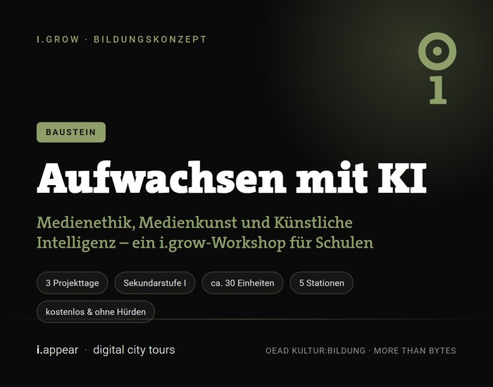

Es gibt Neuigkeiten aus der Bildungsschiene von i.appear: i.grow ist ab sofort in der Datenbank „Angebote von Kulturschaffenden für Schulen“ des OeAD gelistet – der Agentur für Bildung und Internationalisierung der Republik Österreich. Damit ist unser Workshop-Format „Aufwachsen mit KI: Medienethik, Medienkunst und Künstliche Intelligenz“ österreichweit für Schulen sicht- und buchbar. Inhaltlich ist es an den OeAD-Schwerpunkt „More than Bytes“ angeschlossen.
Worum es geht
KI ist längst Teil der Lebenswelt von Kindern und Jugendlichen – in Suchergebnissen, Feeds, Sprachassistenten, generierten Bildern. i.grow setzt genau dort an: nicht beim Erklären über KI, sondern beim eigenen Gestalten mit einer Haltung dazu.
Über drei Projekttage setzen sich zwei Klassen der Sekundarstufe I mit KI als gesellschaftlichem Phänomen auseinander – als partizipativer Medienworkshop mit künstlerischer Begleitung.
Fünf Stationen, ein Bogen
Das Konzept gliedert sich in fünf aufeinander aufbauende Stationen – vom ersten Entdecken im Alltag bis zur Frage, welche Zukunft wir eigentlich wollen.
- KI & Gesellschaft – Wo begegnet uns KI? Von Sprachassistenten über Empfehlungsalgorithmen bis Gesichtserkennung. Die Schüler:innen entdecken KI im Alltag und reflektieren die gesellschaftlichen Auswirkungen.
- Daten verstehen – Woher „lernt“ KI? Eine interaktive Visualisierung macht Trainingsdaten, Bias und die Macht hinter Algorithmen greifbar.
- Fake oder Fakt? – Deepfakes, KI-generierte Bilder und Texte im direkten Vergleich mit realen Inhalten. Hier schärfen die Schüler:innen ihren kritischen Blick.
- Gestalten mit und ohne KI – Hands-on: Die Klasse produziert eigene multimediale Inhalte – Bilder, Video, Audio, AR – und stellt sich die Frage, wie sich das Gelernte an Peers weitergeben lässt.
- KI & Werte – Präsentation der gestalteten Lernwelt und gemeinsame Diskussion: Welche Zukunft wollen wir, welche Kompetenzen brauchen wir, welche Werte müssen wir reflektieren?
Der Drei-Tage-Bogen
Der Ablauf folgt einem klaren Dreischritt: Verstehen – Gestalten – Reflektieren. Tag 1 dient dem Begreifen und Hinterfragen, Tag 2 der Medienproduktion, Tag 3 der Wertereflexion und Präsentation. Dazwischen übernimmt i.appear das Kuratieren – fachliche Prüfung, Redaktion und technische Aufbereitung.
Vom Konsumieren zum Vermitteln
Der Kern von i.grow ist ein Perspektivwechsel: Schüler:innen werden selbst zu Gestalter:innen, Kurator:innen und Vermittler:innen. Nach dem Peer-to-Peer-Prinzip gilt: Eine Klasse erstellt die Inhalte, i.appear kuratiert sie, und alle anderen Schulen können die fertigen Stationen als Unterrichtstool nutzen.
Die Ergebnisse werden als dauerhafter digitaler Rundgang in der Web-App veröffentlicht. Mit jedem Durchgang wächst so ein schulübergreifendes Netzwerk aus peer-produzierten Bildungsinhalten. Wie ein solches Projekt von der ersten Idee bis zum veröffentlichten Rundgang abläuft, beschreibt der Beitrag Wie ein i.grow-Projekt funktioniert.
Anschlussfähig an den Unterricht
i.grow fördert Medienkompetenz, kritisches Denken, kreative Ausdrucksfähigkeit und ethische Reflexion. Das Konzept ist fächerübergreifend angelegt und anschlussfähig an die österreichischen Lehrpläne:
Damit greift i.grow genau jene Kompetenzen auf, die ab dem Schuljahr 2027/28 das neue Pflichtfach Medien und Demokratie in der AHS-Oberstufe verbindlich macht – nur eben handlungsorientiert, ortsbezogen und mit einem veröffentlichten Ergebnis am Ende.
Kostenlos und ohne Hürden
Ein Punkt, der uns besonders wichtig ist: Der fertige Rundgang ist kostenlos, ohne Download, ohne Registrierung und ohne Datenerhebung nutzbar – für alle Schulen und Jugendlichen. Privacy by Design ist im Werkzeug selbst angelegt, nicht nachträglich aufgesetzt.
Interesse geweckt?
Das vollständige Angebot ist in der OeAD-Datenbank einsehbar und kann direkt über das Kontaktformular angefragt werden.
→ i.grow im OeAD-Netzwerk ansehen
→ Für ein erstes Gespräch: marilena@iappear.app
→ Mehr über uns und unsere Projekte: iappear.at